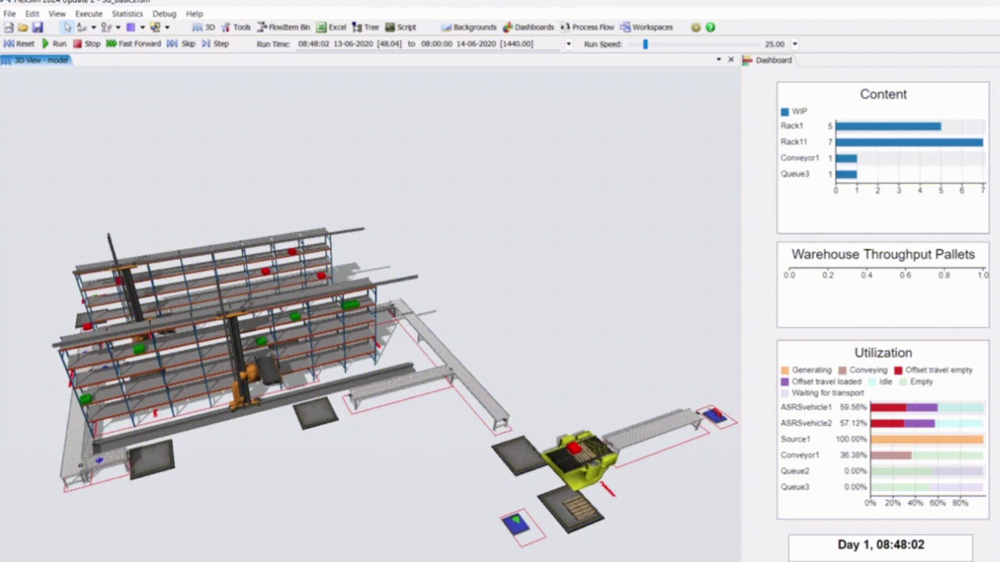
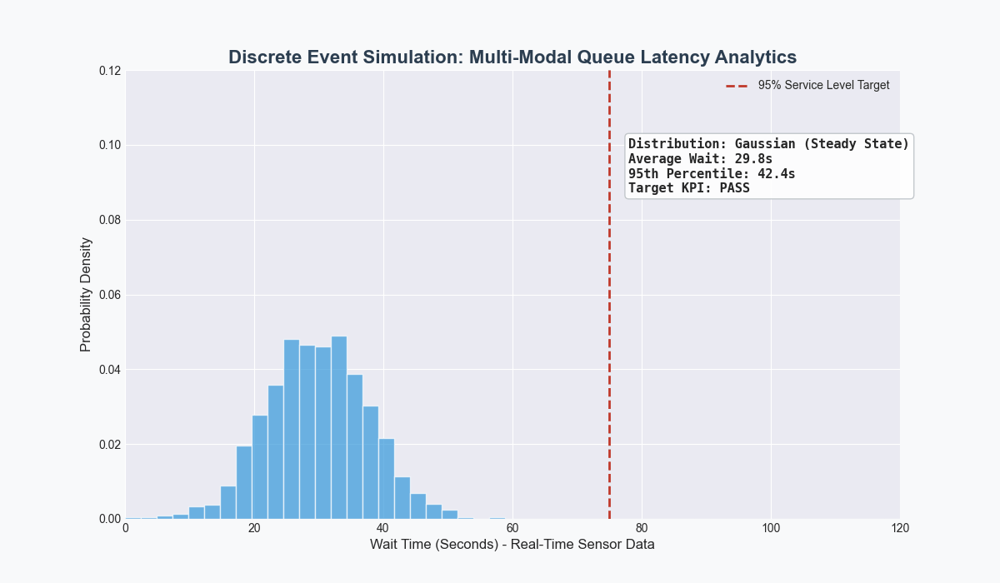
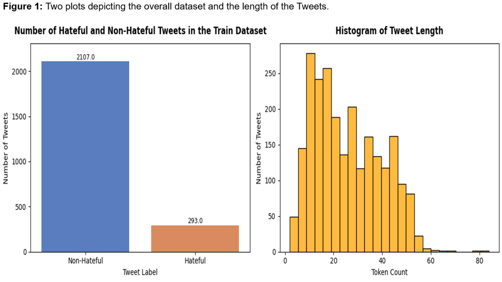
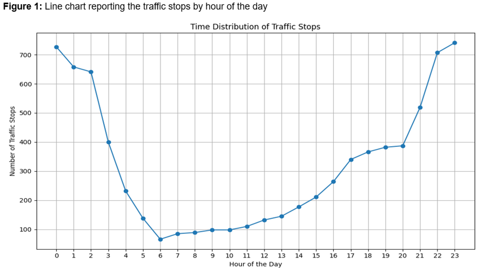
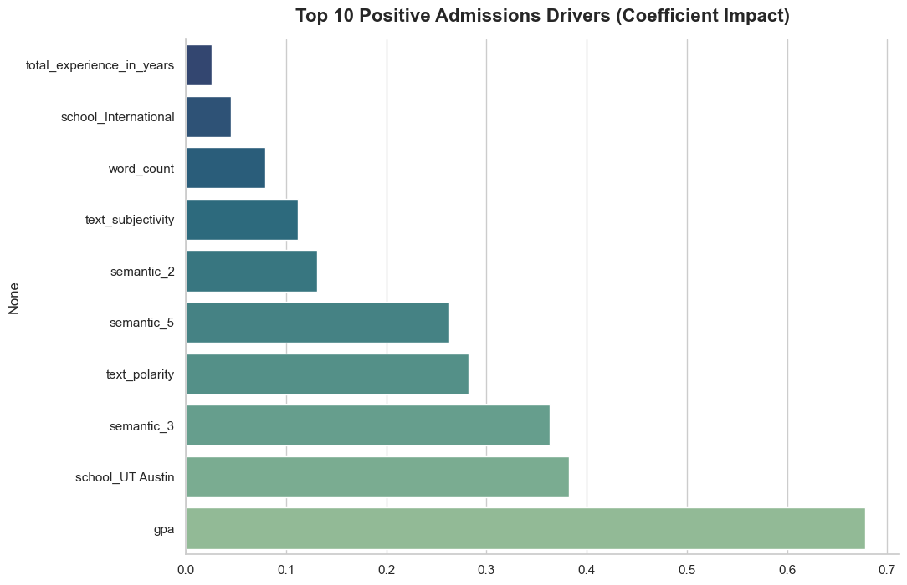
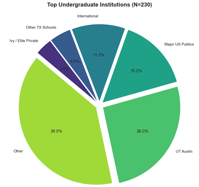
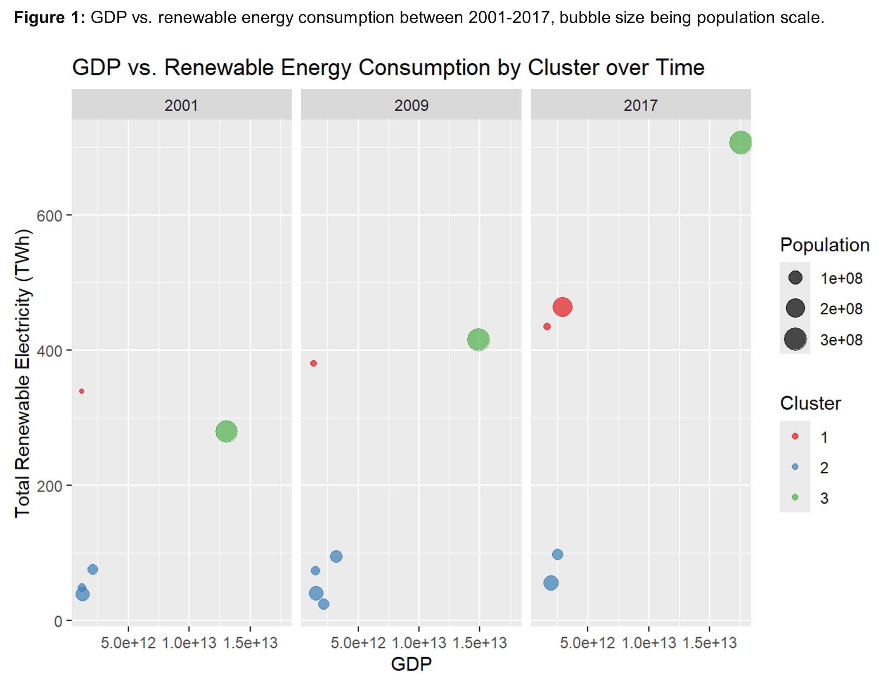

Email
Email GitHub
GitHubProjects in: {machine learning} and [data science]
The Heliocentric Metric: Quantifying Defensive Gravity
Leveraged the NBA’s API via Python for optical tracking data, performed descriptive analysis on "defensive gravity". Conducted residual analysis, standard deviation calculations, outlier detection, and z-score analysis.


Insights: Regression analysis shows gravity is largely independent of scoring efficiency (TS%); gravity threats like Curry, KD, and SGA draw attention that far outpaces their conversion rates, while high-efficiency finishers like Gobert are often guarded more on-ball. I further performed clustering analysis and uncovered insights based on created categorized threats: "Primary Engines" (self-generated gravity) vs. "Pressure Amplifiers" who inherit gravity through system-driven spacing.
Minnesota Health Analysis
Analyzed >10,000 records of Minnesota Department of Health data on asthma, COPD, and air quality (PM2.5) using a custom SQL + R pipeline, producing county-level correlations (Pearson’s r) and significance testing (p-value) results visualized through heatmaps and choropleth maps.
Insights: The relationship between air quality and Asthma diverge heavily across geographic lines, suggesting urban and rural environments moderate the impact of PM2.5 on human health. While raw correlations may differ, there is no strong statistical proof that the PM2.5-COPD relationship is systematically different between Urban and Rural counties.


Manufacturing Simulation Pipeline


Developed a closed-loop pipeline using Python for cleaning and visualizations, PostgreSQL as the source-of-truth for shop floor data, and FlexSim for discrete event simulation as an applied case study for Target.

Deep NLP for Hate Speech Detection
Automated hate speech detection deciding whether a given text contains hateful content. Developed a hate speech classifier by leveraging PyTorch to fine-tune a BERT model.

Predictive Policing: Examining Factors That Influence Police Searches
Employed a decision tree model to predict whether a search will occur during traffic stops by the Austin Police Department. Observed features such as time of day of the stop, location, race of driver, reason for stop, among others. Utilized GridSearchCV for model optimization.

Figure 2: Interactive heat map depicting the location of the traffic stops in Austin, Texas in 2019.
Insights: Significant findings include race’s influence as a core correlational factor in search decisions and geographical location’s (especially east-west coordinates in Austin) connection with the likelihood of searches. Moreover, stops’ timing, particularly during late-night or early-morning hours, also played a role in search incidents.
Predicting Admission into Grad Program
Upgraded a prototype predictor into a robust Logistic Regression model to predict admission into University of Texas at Austin's Master of Science in Data Science program. I scraped 4 years of Reddit data (N=230 profiles) and used Natural Language Processing (NLP) to pull hidden themes right from applicant comments.


Insights: GPA is king (the admitted average is 3.64). But beyond grades, the model loves "Professional Maturity": applicants who talk about leadership, teamwork, and explicitly list their tech stacks fare much better. Writing with a passionate, enthusiastic tone also provides a huge boost over a dry academic style.
Comparative Analysis of Economic Growth and Energy Mix
Used k-means clustering analyses to uncover striking regional disparities in energy consumption, with distinct clusters indicating varying reliance on renewables versus non-renewables.

Insights: Wealthier regions tend to consume more renewable energy, as GDP growth facilitates investment in green infrastructure. Conversely, larger populations do not consistently correlate with higher renewable energy consumption, indicating other factors at play.


© Sergio Hernandez-Acosta. All rights reserved.